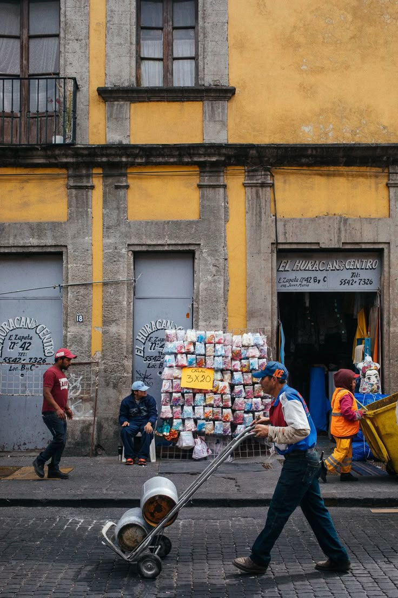
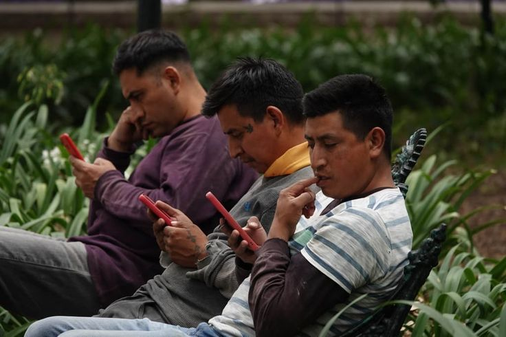
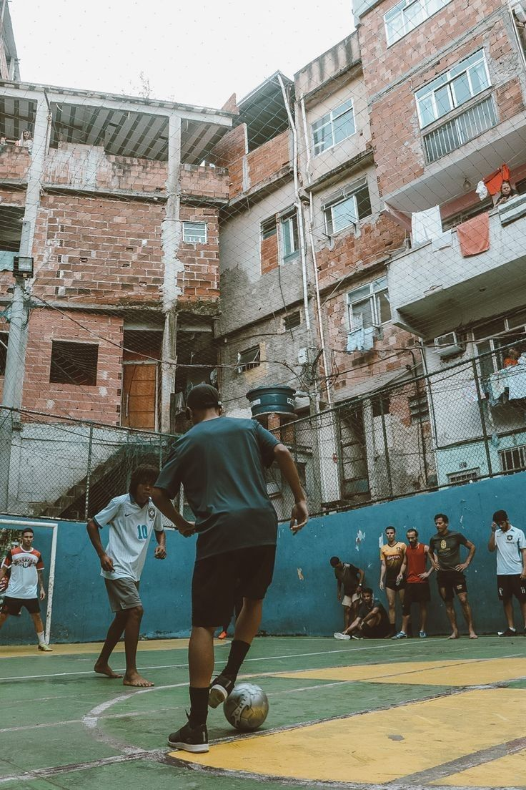
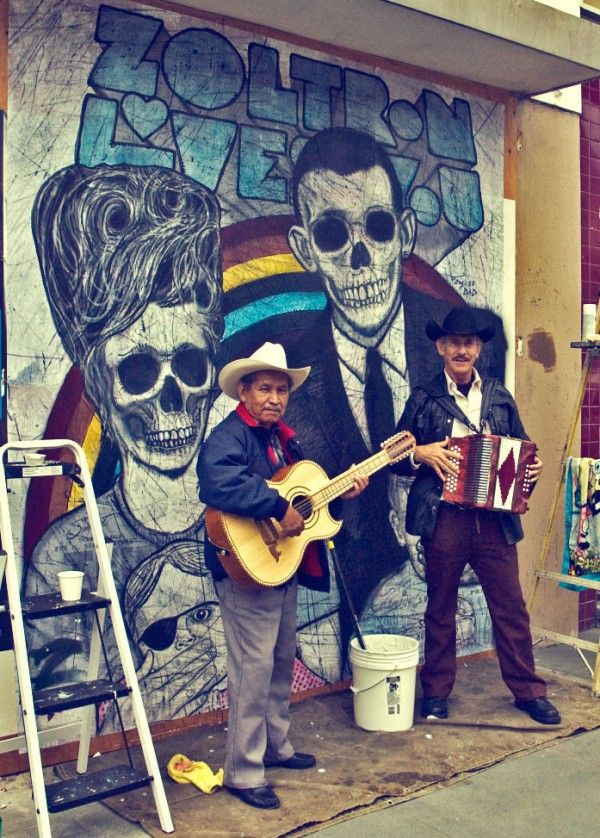
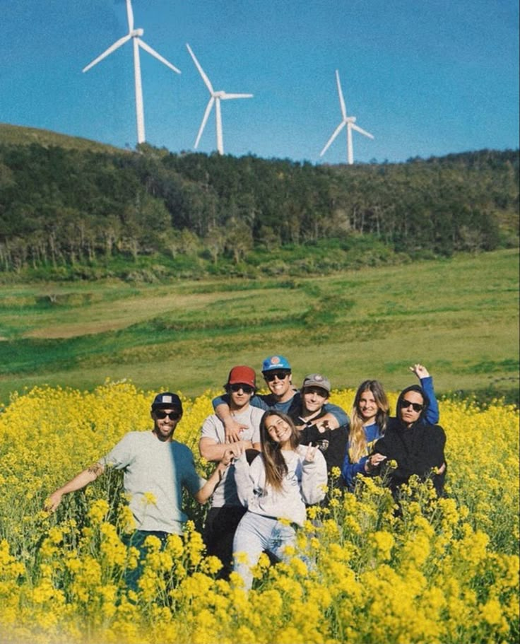
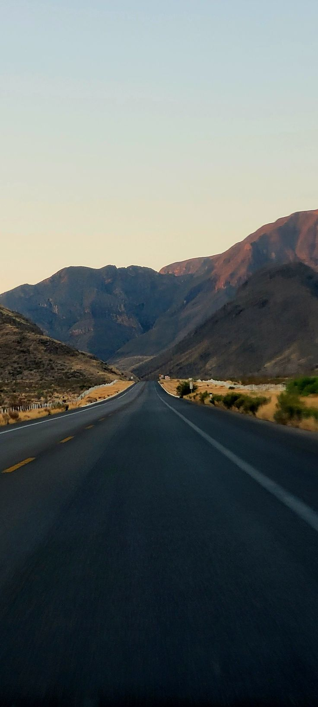

Fotogaleria
Mexico en Cuadro
Mexico en seis escenas
Mirar el pais
Una seleccion visual sobre calle, transporte, deporte, pantallas, cultura y ciudad.

La vida urbana se construye entre prisa, ruido y rutina.

El celular se volvio espacio de informacion, trabajo y conversacion publica.

El deporte aparece donde hay espacio, comunidad y ganas de competir.

La identidad tambien vive fuera de museos y escenarios formales.

Las nuevas generaciones discuten, crean y se informan desde redes.

Cada zona del pais cuenta una parte distinta de la historia nacional.